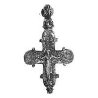
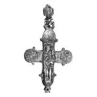

Catalog › CE-0978 · KOR2003-III.1.1.4
Encolpion întreg cu inel bi-conic dublu, relief și niello, inscripții pe ambele valve
sec. XII (1101–1200) · Veliki Novgorod, Rusia · Muzeul-rezervație Unit de Stat din Novgorod (NGOMZ), Veliki Novgorod
double-sided reliquary cross (enkolpion), aramă; c. XII (1101–1200); found at Veliki Novgorod, Rusia; kept at Muzeul-rezervație Unit de Stat din Novgorod (NGOMZ), Veliki Novgorod.




Identificare
- Categorie
- Encolpion bivalv (relicvar)
- Material
- Aramă
- Tehnică
- Turnare în relief; Gravare (incizie); Niello
- Stare
- Întreagă
- Dimensiuni
- Î 80 × L 67 × Gr 12 mm
Iconografie
- Descriere avers
- Encolpion întreg cu inel de agățare bi-conic dublu. Pe interior, pe ambele valve, se observă adâncituri corespunzătoare reliefurilor exterioare. Imaginile în relief sunt de bună calitate, dar frecate. Nielloul s-a păstrat nu numai în liniile adâncite speciale ale desenului, ci pătează reliefurile (?), iar imaginea din medalionul stâng este aproape complet astupată.
- Descriere revers
- Pe revers inscripții de ambele părți ale Maicii Domnului și în medalioane.
- Inscripții
- МР ΘҮ; НОНЪ; IC XC; МР ΘҮ; НН К Λ А; ПЕТ
- Limba
- Slavonă
Datare și atribuire
- Datare
- sec. XII (1101–1200)
- Centru
- Necunoscut
- Tipologie
- Korzukhina–Peskova 2003, tip III 1 1
Descoperire
- Localitate
- Veliki Novgorod
- Țară
- Rusia
- Context
- Așezare
- Anul
- 1993
Păstrare și referințe
- Colecție
- Muzeul-rezervație Unit de Stat din Novgorod (NGOMZ), Veliki Novgorod
- Bibliografie
- G. F. Korzukhina, A. A. Peskova, Древнерусские энколпионы. Нагрудные кресты-реликварии XI–XIII вв., Sankt-Petersburg, 2003 [Korzukhina–Peskova 2003], p. 102, cat. nr. III 1 1/4, reprodusă la Табл. 55 (planșe, p. 297).
- Figura
- Табл. 55
- Planșe
- Korzukhina–Peskova 2003, Табл. 55 (planșă fără paginație proprie în PDF; p. 297 tipărită)
- Observații
- Datare după Peskova: sec. XII. Circumstanțe: Săpătura Fedorovski V, 1993, stratul superior nr. 642, descoperire dintr-un complex al gospodăriei din sec. XII. Inscripțiile de pe față sunt adâncite: МР ΘҮ, НОНЪ; pe revers, de ambele părți ale Maicii Domnului IC XC și МР ΘҮ, în medalionul de sus НН К Λ А, în cel din dreapta ПЕТ. Dimensiuni: grosime 1,2 cm. Inscripții mixte: formule grecești și nume slavone, unele stilizate sau stricate. Coordonate: nu sunt date în sursă.
Citare: Corpus Encolpiorum, CE-0978, Encolpion întreg cu inel bi-conic dublu, relief și niello, inscripții pe ambele valve, --root/piese/KOR2003-III.1.1.4/ (accesat 2026-10-20).